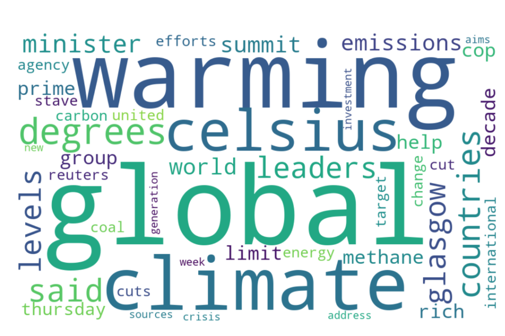

CONCLUSION.
Welcome back time travelers and you (the reader)!
Let’s take a look at what we learned and gathered from our journey into a data-powered look into climate change and global warming.
Countries vs Their Temperatures
We began to draw our first inference looking at how countries are grouped together based on data collected which showcases every country coupled with the average temperatures of that county over the late 1990’s. From the groups we made in our clusters, we can decipher what countries are correlated to one another based on the temperatures.
We can see common temporal region countries being grouped together based on our results, such as India and China, based on the country’s number. Our results were accurate, as we can see the graph below of the Earth and how the temporal climates are linked together, which we also proved based on our clustering. However, once we increased our clustering size,we can see a shift in these values.
This is a screenshot of KMeans Clustering where K = 8
Furthuremore, what happens here in our analysis, is that by increasing the number of cluster size, we can see the groups increase and the countries being shifted into more smaller clusters. When this happens, along with an increase in climate change, the temperatures continue to rise, and we see that temporal regions which shouldn’t be clustered together start to associate with hotter and hotter regions. Since the data collected shown only data in the end of 1990’s, we can logically conclude that more countries group together with hotter countries as the temperatures continue to rise. This shows us that the world is becoming a global hot zone pervasively across various regions of the world.
Global temperature rising
To prove that the worlds temperature is rising, let’s take a look back to noticing how the average monthly temperatures across USA and India are peaking in both extreme ends over a hundred years. To the time travelers, the plots below, created in R, showcases that the warmer months are getting extending (or peaking) as the years progress as well as the colder regions lowering (or dipping).

Figure: USA_Chart.png | Note: Temperature in C | Code: Shown in Data Cleaning ("CODE: R Cleaning - Country")

Figure: India_Chart.png | Note: Temperature in F | Code: Shown in Data Cleaning ("CODE: R Cleaning - Country")
This yield to the conclusion that however small a deviation is from the norm in the global temperature of two different climate regions, they both are still facing the same issues via global warming. This type of variation could butterfly into massive shifts in our ecosystems, such as polar ice caps melting to ocean waters rising. This trend, if continued, will make Earth uninhabitable if this doesn’t stop along with other human interventions. And, according to researchers within the next 500-1000 years earth this misfortune will indeed come true.
Image source
Can we predict this change?
The million-dollar question for researchers using this data and code presented in this portfolio is, "can we somehow predict the effects of climate change"? The short answer is yes, but the long answer is no. Using predictive modelling, we can see the temperature fluxuation predictions over a short period of time. With the data we gathered, which depicts the average temperature for a country over 300 years, we can use a feature generating variable which will show researchers, much like yourself, if the temperatures are drastically changing, and of course, to what extent. The long answer is no, due to the uncertainties of the other variables which our data can't be accounted for. For example, if we see a rise in gasoline powered vehicle sales, that would add so much more severity to to the planet. Or, if there was a new molecule which was found that depletes the ozone layer faster (perhaps due to the increase in plastic use), our predictive models can't be used due to factors like these not being taken into consideration. This can help educate people about the modern day changes due to the various reasons on why the temperatures are getting hotter or colder.
However, on a short term basis, we can predict the category in which the climate is being changed currently. We input the category of data as either extreme cold, cold, normal, hot, or extremely hot. Why we do this is that since humans aren’t able to tell the differences between normal decimal difference of two numbers, due to the lack of frame of reference, we use categories to depict these changes. And thus, we see a strong correlation in our model to predicting the accurate (future) labels.
What do people think today?
Finally, to both you and the time travelers, let's take a look into what people in our modern day society think about global warming and climate change. First, we gathered tweets with the appropriate hashtags and cleaned it to make transactional data. This showcases to us what words are being used and how closely associated they are. This along with a word cloud, which shows us the most common words used by each hashtag, gives us an understanding on how educated the public is and how much global warming and climate change is being talked about over the internet.

Wordcloud for climate change.

Wordcloud for global warming.
These results, along with the network graphs, showcases that not only are people talking about climate change, we can see a lot of news articles being pulled up from the data, indicating the awareness of these hard pressing topics are being talked about. This gives us a certain hope that our future isn’t doomed and that there is still time to change what has already been done.
Is there hope?
Before the time travelers leave, let’s see what can be done to lessen the effects of global warming and climate change. Much like our last conclusion, we were able to pull tweets regarding renewable energy, creating a word cloud of what are the most common words used here.

Wordcloud for renewable energy.
Common themes in the wordclouds about renewable, energy, power, and wind. With this much being said by the people over the internet, lets push our society to embrace greener creation of energy, such as wind turbines, electric cars, and solar power energy.
A common word used in economics is called sunk cost, which essentially means what whatever commodity that’s lost won’t be able to get back, such as time, money, and energy. However bad the trend is looking like based on the global climate change patterns to what it is today, let’s, together as a community, make that change positive starting from today! Let’s invest in various renewable energy resources and see the climate change peaks decrease as we run the same code with the new data in another 100 years.

We only have one Earth, and let’s make sure to protect it at all costs. Here’s to life and the joy it brings!
Have a safe journey back time-travelers!